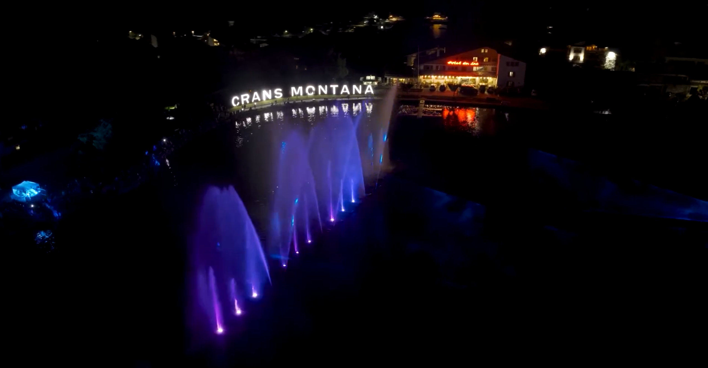
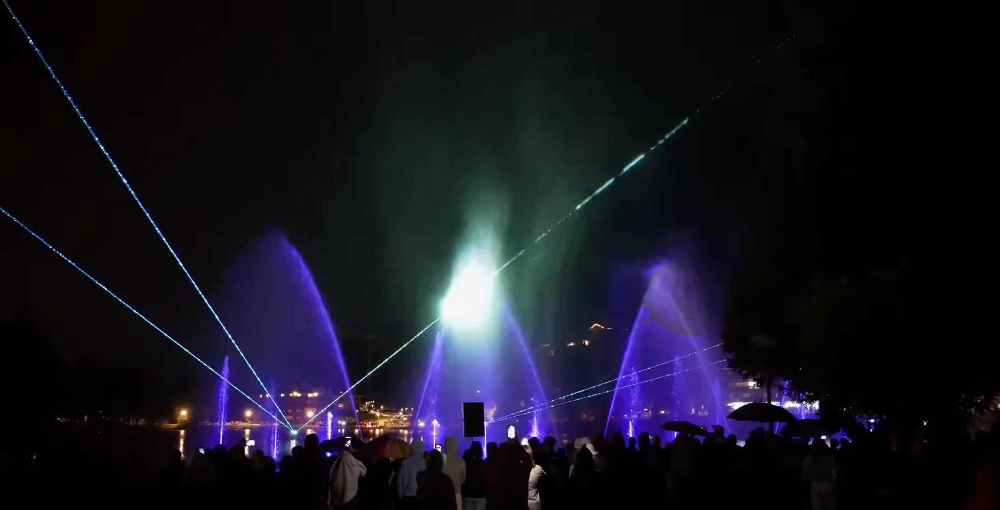
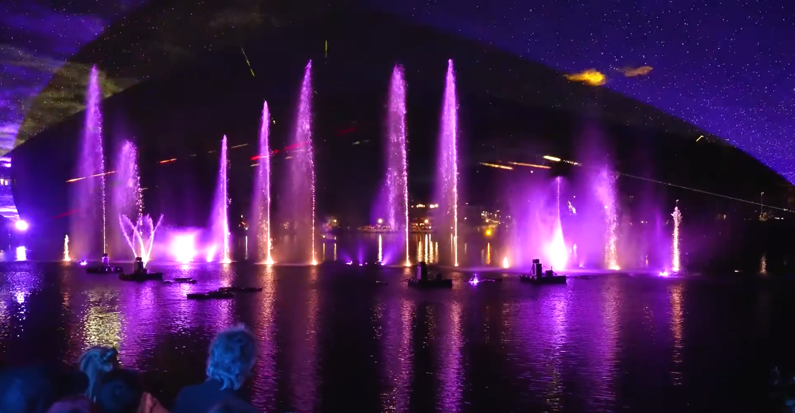
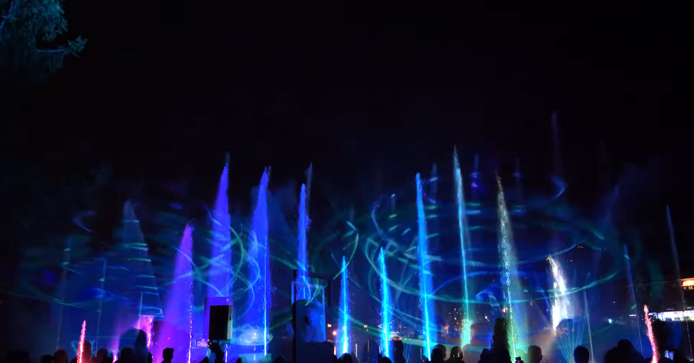

Chargement...
Programmation d'un spectacle de jets d'eau pour la Fête Nationale de Crans Montana. Via Aquatique Show.




Programmation d'un spectacle de jets d'eau pour la Fête Nationale de Crans Montana. Via Aquatique Show.



